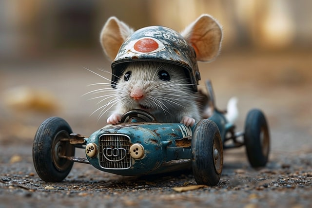

Jaka jest różnica między ręcznie kodowanymi stronami internetowymi a
witrynami Wordpress?
PATRYK KRUK
18.05.2024
Co sprawia, że tworzone przeze mnie strony internetowe są wyjątkowe
i niepowtarzalne w porównaniu stron stworzonych za pomocą
Wordpressa?Wszystko sprowadza się do tego, jak są wykonane i jak
wpływa to na czas ładowania, utrzymanie użytkowników na stronie i
rankingi wyszukiwania...

Jak zoptymalizować podstawowe wskaźniki witryny i zwiększyć szybkość
strony?
PATRYK KRUK
18.05.2024
Nowe wskaźniki Core Vitals firmy Google zmieniają sposób, w jaki
witryny są klasyfikowane w rankingu na podstawie zoptymalizowanej
obsługi mobilnej. Pokażę Ci wszystko, co musisz wiedzieć o tym, jak
spełnić te nowe wymagania Google i uzyskać wynik ponad 95/100 w
zakresie szybkości i wydajności dla ręcznie kodowanych stron HTML i
CSS. Może to również dotyczyć dowolnej witryny internetowej,
niezależnie od sposobu jej zbudowania.
Jak dodać tryb ciemny (dark-mode) do strony internetowej?
PATRYK KRUK
18.05.2024
W tym poście udostępnię kod, którego używam do dodawania trybu
ciemnego do wszystkich moich witryn, a jego wdrożenie zajmie Ci
mniej niż 5 minut. Pokażę Ci swój kod i nawet zrobię dla Ciebie
przycisk!
Jak zbudować od podstaw mobilną i responsywną stronę internetową w
HTML i CSS?
PATRYK KRUK
18.05.2024
Jeśli masz zamiar teraz stworzyć witrynę internetową, Twoim
najważniejszym zadaniem powinno być upewnienie się, że jest ona
responsywna i dopasowuje się do wszystkich rozmiarów ekranu,
ponieważ Google ogłosił, że wszystkie responsywne witryny
internetowe będą miały lepszą pozycję w rankingu ze względu na
lepszy czas ładowania, lepszą użyteczność i będą preferowane w
wyszukiwaniach mobilnych...